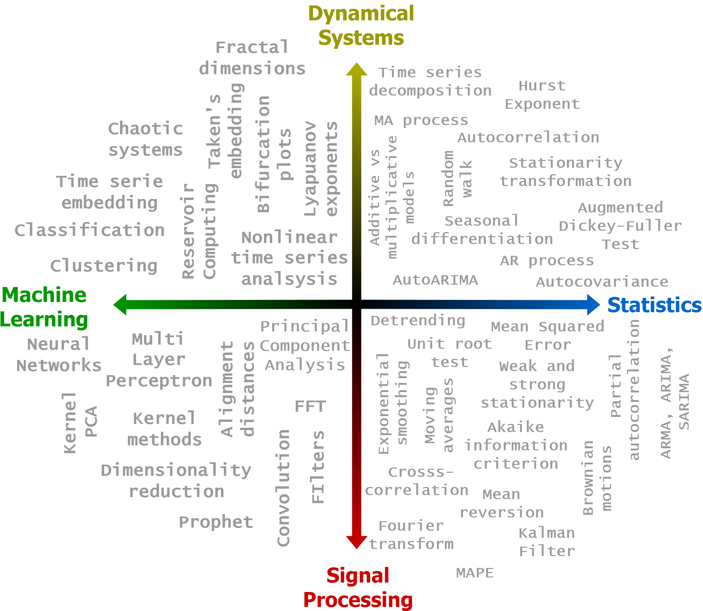

Time series analysis with Python#
Welcome to a journey through the world of time series analysis using Python! This collection of Jupyter notebooks serves as both a comprehensive course and a practical guide for students, data scientists, and researchers interested in exploring the interplay between statistical theories and practical applications in time series analysis.
Time series analysis is a crucial discipline in data science, offering insights into patterns over time that are invaluable for forecasting, anomaly detection, and understanding temporal dynamics. The aim of this course is to introduce fundamental concepts of time series analysis from multiple perspectives: statistical, dynamical systems, machine learning, and signal processing. This interdisciplinary approach aims to give the reader a broad view on the world of time series.
{kind=link}
The course is designed to combine high-level theoretical knowledge with practical programming skills. Each chapter introduces key concepts of time series analysis, followed by hands-on coding sections. This structure allows you to immediately apply the theoretical concepts you learn, seeing first-hand how these translate into functional tools in data analytics. Through this process, you will gain both the knowledge to understand complex time series data and the skills to analyze and predict it effectively. To reinforce learning and encourage active engagement, each chapter concludes with exercises. These are designed to test your understanding and help you apply the lessons in practical contexts.
Whether you are new to time series analysis or looking to refine your expertise, this course offers a broad exploration of the field, with Python as your toolkit. I hope that you will find this material both educational and entertaining, brining you a step closer to mastering time series analysis.
📖 Chapters#
The course is organized into the following chapters.
- Introduction to time series analysis
- Stationarity
- Smoothing
- AR-MA
- ARMA, ARIMA, SARIMA
- Unit root test and Hurst exponent
- Kalman filter
- Signal transforms and filters
- Prophet
- Neural networks and Reservoir Computing
- Nonlinear time series analysis
- Time series classification and clustering
- Knowledge test
- Resources and acknowledgments
Note
The notebooks are presented in class as slides using RISE (see here for more details). For this reason, the text in the notebooks is organized with bullet points.
🎓 University courses#
These notebooks are currently adopted in STA-2003 Tidsrekker at UiT the Arctic University of Tromsø.
🚀 Getting started with coding#
You can read from here all the content of the course. However, to get your hands-on experience with coding you want to run the code snippets or the whole notebooks that you can download on
.
To run the code and the notebooks the recommended steps are the following:
Download and install Miniconda.
Download the env.yml file.
Open the shell and navigate to the location with the yml file you just downloaded.
If you are on Windows, open the Miniconda shell.
Install the environment with
> conda env create -f env.yml
Activate your environment:
> conda activate pytsa
Go to the folder with the notebooks
Launch Jupyter Lab with the command
> jupyter lab
⚒ Roadmap#
Warning
This is an early version of the course. There might be imprecisions and errors. Also, some chapters might undergo significant revisions and changes.
I am planning to add more content over time to cover additional topics in new chapters and to extend the existing ones with new examples and explanations. If there is a specific topic you feel is missing or passages that you feel are not clear enough, open an Issue on the repository on Github.
A note on deep learning#
For the moment, I intentionally decided to leave more advanced deep learning techniques aside. There are a couple of reasons for this choice. Firstly, advanced deep learning methods rely heavily on specific knowledge and tools that are generally covered in specialized deep learning courses. This focus does not align with the introductory nature of this course, which is aimed at covering the fundamentals of time series analysis.
Secondly, while deep learning opens up exciting avenues for new applications—such as NLP and analysis of video and spatio-temporal data—it primarily enhances capabilities in handling diverse data types and scaling to large datasets. However, for the core objectives of this course, which are to understand and manipulate time series data effectively, the advantages of moving from the basic neural networks introduced here to more complex deep learning models do not significantly alter the fundamental approach.
🤝 Contributing#
Time series analysis with Python is designed with accessibility in mind. The material is completely open-sourced and uses only free software, based in Python. You can contribute both by adding new material, fixing typos, and suggesting edits. To do that, Fork the Github repository and submit a pull request.
Finally, if you liked this content, please share it with others who might find it useful and give it a Star on GitHub.